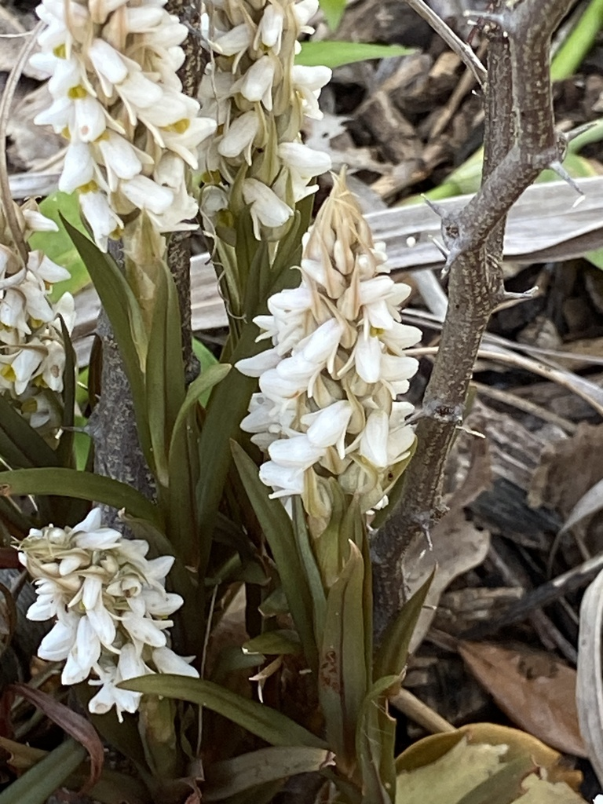

- A tiny orchid that grows as a lawn weed throughout warm-climate Florida — visible as a small rosette of flat leaves followed by a thin spike of inconspicuous white flowers.
- Not native to Florida. Introduced from Asia, it naturalized quietly in Florida lawns and is now ubiquitous in mowed areas. Because it is small and flowers between mowings, most people never notice it.
- Documented here as part of the honest inventory. It is present at the park as a naturalized weed in mowed areas and is technically an orchid — one of the smallest and most unassuming in the family.
- An evolutionary speedster — in Florida it has adapted to residential mowing schedules. It can shoot up a flower spike, get pollinated, and drop its seeds all within a single 7 to 10 day window between lawn cuts.
- A true orchid (Orchidaceae) hiding in the turf grass. The smallest and most overlooked member of one of the largest plant families on earth.
Non-native. Native to tropical Asia. Naturalized in Florida and other warm-climate states in disturbed grassy areas. Member of Orchidaceae — the orchid family.
- The Lawn Orchid is a genuine orchid that lives as a lawn weed - one of the small surprises a close look at the ground can turn up. Native to tropical Asia, it was first recorded in the United States near Fellsmere, Florida, in 1936, apparently arriving with imported centipede grass.
- It spread only once its required soil fungus partner became established locally, since orchids depend on such fungi to germinate.
- It appears in cool, moist months as a small rosette of narrow leaves, then sends up a short spike of tiny white flowers with a yellow lip, and is gone again - the species name strateumatica comes from a Greek word for a marching band of soldiers, fitting a plant that turns up in ranks and then vanishes. It largely sets seed by self-pollination, which is why it can colonize new lawns on its own.
- It is harmless and not a management concern; it is recorded here as a small botanical curiosity hiding in plain sight.
Little direct wildlife value. The flowers are small and largely self-pollinating, so they support few visitors. Its interest is botanical - a wild orchid completing its life cycle in mowed turf.
Tiny, white with a yellow lip, in a short compact spike a few inches tall, mainly in winter and early spring.
Narrow, grass-like to lance-shaped, in a small low rosette, often with a slight reddish tinge.
A small terrestrial orchid, only a few inches tall, appearing seasonally in lawns and damp open turf.
In winter, scan short grass for a small rosette topped by a stubby spike of little white-and-yellow flowers. Easy to miss and easy to mow over.
This small orchid isn't a food plant, but it's harmless — not toxic to people or dogs.
- © Pammy63 (CC-BY-NC), via iNaturalist